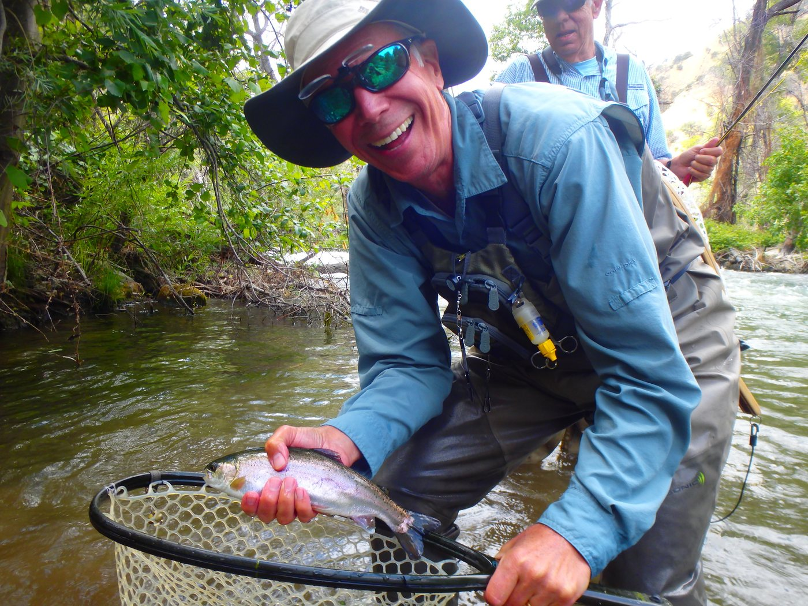

Home / About Richard
About
Richard Loft
Licensed fly fishing guide, conservationist, and a man who has spent the better part of a decade learning one creek by heart.
Richard has been an avid fisherman all his life, starting at ten years old in West Covina, California. He loved it enough that, before he had a driver's licence, he would hitchhike up to Silverwood Lake or into Azusa Canyon just to fish for the day. His mother used to tell stories of his exploits throughout his youth as he tried all ways and means to get to water.
He was turned on to fly fishing at Sweeney's Sports in Napa by Bob Arwine. The minute he tried it — on Putah Creek, in an old pair of neoprene waders — Richard was hooked, literally. Since then he has logged thousands of hours on his home river, and a few hundred more on the Yuba, the Truckee and the Little Truckee, the Feather, the American, the Lower Sac, the East Walker, the East Carson, the Pit, Hat Creek and the Stanislaus.
Conservation, not just fishing
Richard is a conservationist first. He has volunteered with Putah Creek Trout and the Department of Fish & Wildlife's Heritage Wild Trout Program since 2008, taking part in annual California Coastal Clean-Ups, creek surveys and habitat restoration on a regular basis. He has served as a mentor for the Napa RCD's SLEWS youth program, and has taken classes at Napa Junior College toward an Environmental Sciences certificate — his favourite, Wildlife & Fisheries Biology, taught by the Napa RCD's Dr. Jonathan Koehler.
If you run into him on Putah Creek he will often be found with his rescue dog Rusty close behind — either shouting "WHOO-HOO!" on a hook-up, or cleaning up trash that others have left behind.
What guiding with Richard is like
Trips are deliberately small: one or two anglers as standard, up to six by arrangement. You will fish water chosen for the day's flows rather than a fixed route, and you will spend as much time learning why a drift worked as you will actually casting. Beginners are the norm, not the exception.
Richard provides all the fly rods, reels and gear you need, and rents waders and boots in every size for walk-and-wade adventures. He will happily accommodate an off-the-beaten-path day during your Napa Valley vacation, or a weekend trip further afield.
I would do just about anything to get a chance to fish; to stand out in a river and let my thoughts wander. It's the most peaceful place in the world to me — the place I feel focused and free. Richard Loft

Water Richard knows well
- Putah Creek — his home tailwater, below Lake Berryessa
- Lower Yuba River — Marysville and the gold country riffles
- American River — shad season, April and May
- Truckee & Little Truckee
- Feather, Lower Sacramento, East Walker, East Carson
- Pit River, Hat Creek and the Stanislaus
Quick facts
- Licensed and insured guide, guiding since August 2013
- Based in Napa Valley, California
- Catch-and-release only, on every trip
- Groups of up to six with notice
- Rescue dog Rusty rides along most days
On film
Meet Richard Loft
Two minutes on the water with the man who started Napa Valley Fly Guides.
Dedication
In memory of Geoff Fernald
Our first website and this little business would not have been possible without Geoff — father-in-law, friend, engineer and poet. His advice, patience and web expertise gave Napa Valley Fly Guides a running start.
Read Geoff's story
Book your trip
Let's get you on the water.
Trips book quickly in spring and autumn. Call, text or email Richard with a date in mind and he will confirm water levels, meeting time and gear for the day.